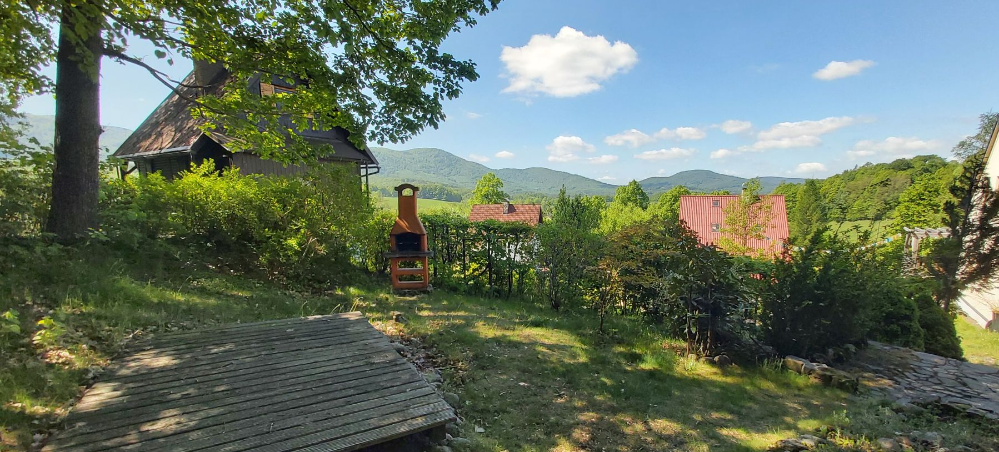

Single trek pod Smrkem
Lázně Libverda
Frýdlantský zámek
Rozhledna na Smrku 1124 m.n.m.
Obří sud
Bazilika v Hejnicich
Koupaliště v Hejnicich
Koupaliště v Raspenavě
Liberec 25 km
Jizerskohorské technické muzeum
Přehrada Souš